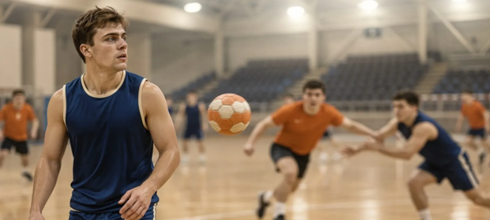

- Sport
- Concentration
- Préparation mentale
« Je me déconcentre très vite en plein match » : comment retrouver votre attention
 Par Muriel Calas7 min de lecture
Par Muriel Calas7 min de lecture
Depuis quelque temps, vous avez du mal à rester concentré. Votre attention est très brève, vous sortez très vite de votre compétition. Résultat : vous ratez des passes, vous n’êtes pas correctement placé.
Vous ne comprenez pas ce qui vous arrive. Votre motivation en subit les conséquences, et peut-être aussi votre confiance en vous.
Préparatrice mentale à Narbonne, formée notamment à la méthode Catch & Think sur les mécanismes de l’attention, j’accompagne souvent des sportifs dans cette situation. Rappelons-le d’emblée : il est normal que la concentration diminue de temps en temps. L’enjeu est de comprendre pourquoi elle décroche plus que d’habitude, et de retrouver votre pleine efficacité, même quand la compétition dure.
1. Comprendre ce qui se joue
La concentration n’est pas constante. Elle fluctue au cours d’un match, d’une journée, d’une saison. Personne ne reste attentif à 100 % pendant toute une rencontre.
Ce qui doit vous alerter, c’est un changement : une attention qui devient beaucoup plus courte qu’avant, des décrochages plus fréquents, des erreurs inhabituelles. Ce changement a presque toujours une origine. Et tant qu’on ne l’a pas identifiée, on a tendance à se juger, à douter, ce qui fragilise encore la concentration.
Si votre difficulté vient surtout d’éléments extérieurs pendant le match, arbitrage, public, adversaire, vous pouvez aussi lire Concentration : comment ignorer les pensées parasites et les distracteurs en match.
2. Les situations que vous reconnaîtrez peut-être
- vous ratez des passes que vous réussissez habituellement ;
- vous n’êtes pas au bon endroit au bon moment ;
- vous « décrochez » plusieurs fois par match sans vous en rendre compte ;
- votre niveau baisse nettement en fin de rencontre ;
- vous avez moins envie d’aller à l’entraînement ;
- vous doutez de vous et de votre niveau.
3. Pourquoi cela arrive
La déconcentration peut avoir toutes sortes d’origines. Le but est de trouver la ou les vôtres. Parmi les plus fréquentes :
La fatigue physique, liée par exemple à une période d’examens, à un sommeil insuffisant ou à une charge d’entraînement élevée.
La fatigue nerveuse et les contrariétés, quand des soucis personnels, scolaires ou professionnels occupent une partie de votre esprit.
Une baisse de motivation, quand les objectifs ne sont plus clairs ou ne vous parlent plus.
Une alimentation moins équilibrée, qui peut peser sur votre énergie.
Des enjeux qui augmentent, et la pression qui va avec.
4. Ce que la préparation mentale peut apporter
Voici quelques pistes de ce que nous pouvons travailler ensemble pour retrouver votre pleine efficacité :
- chercher l’origine de votre déconcentration, parmi tout ce qui peut entrer en jeu, pour trouver ce qui vous concerne vraiment ;
- rediscuter de vos objectifs et de votre organisation en tenant compte de ce qui a été soulevé, pour réajuster l’ensemble et retrouver sérénité et calme, plus propices à la concentration ;
- apprendre à vous connaître et vous appuyer dessus : détecter les sentinelles, ces signaux que votre corps et votre cerveau vous envoient. À partir de là, vous travaillez à chaque entraînement la réaction que vous souhaitez avoir à la place de celle que vous avez, en vous appuyant sur des ressentis, des sensations, des mots, des informations auditives, tout ce qui vous est propre et propre à la situation. Vous renforcez ainsi vos compétences et votre confiance ;
- travailler votre disponibilité physique : en apprenant à vous relâcher, à souffler correctement et régulièrement, vous remettez le curseur de disponibilité physique à zéro pour continuer votre travail. Vos émotions n’en seront que plus disponibles aussi ;
- travailler l’attention dans différentes situations et à différents degrés, en fonction de vos besoins et de votre progression ;
- vous entraîner en visualisation, en utilisant les différents types de répétitions mentales pour progresser et maintenir votre concentration en compétition.
Et bien plus encore, selon ce que nous découvrirons ensemble.
5. Quatre pistes pour commencer
Tenez un carnet de match
Après chaque match ou entraînement, notez les moments où vous avez décroché, ce qui se passait, comment vous vous sentiez, comment vous aviez dormi. Au bout de quelques semaines, des tendances apparaissent souvent.
Repérez vos sentinelles
Quels signaux précèdent vos décrochages ? Une pensée qui part ailleurs, une sensation de lourdeur, un regard qui se fixe, un agacement. Plus vous les repérez tôt, plus vous pouvez agir avant de sortir du match.
Soufflez à chaque arrêt de jeu
Utilisez chaque temps mort pour relâcher les épaules et prendre une expiration longue. Ce petit geste remet votre disponibilité physique à zéro, et aide votre attention à revenir sur le jeu.
Visualisez vos actions clés
Quelques minutes par jour, revoyez mentalement vos placements, vos passes, vos actions habituelles, en mobilisant vos sensations. La visualisation entraîne votre cerveau à rester présent sur ces situations, y compris en match.
Il est normal que la concentration baisse parfois. Ce qui compte, c’est de savoir pourquoi, et de savoir revenir.
La fatigue est souvent en cause : pour aller plus loin, vous pouvez lire Récupération physique : sommeil et micro-sieste au service de la performance.
6. Quand se faire accompagner ?
Un accompagnement peut être utile si :
- vos décrochages durent depuis plusieurs semaines ;
- votre niveau en match ne correspond plus à votre niveau à l’entraînement ;
- vous perdez confiance ou plaisir à pratiquer ;
- vous ne parvenez pas à identifier ce qui a changé ;
- une période chargée s’ajoute à vos compétitions.
Si vous ressentez une fatigue importante et durable, parlez-en aussi à votre médecin, pour écarter une cause physique.
Questions fréquentes
Est-ce normal de perdre sa concentration pendant un match ?
Oui, la concentration fluctue naturellement. Ce qui doit alerter, c’est un changement net par rapport à d’habitude : des décrochages plus fréquents ou plus longs.
La fatigue peut-elle expliquer une baisse de concentration ?
Oui, c’est même l’une des causes les plus fréquentes : fatigue physique, manque de sommeil, période d’examens ou fatigue nerveuse. C’est pourquoi le premier travail consiste à chercher l’origine.
Qu’est-ce que les « sentinelles » ?
Ce sont les signaux que votre corps et votre cerveau vous envoient avant un décrochage : une sensation, une pensée, une émotion. Apprendre à les repérer permet d’agir plus tôt.
Comment la visualisation aide-t-elle la concentration ?
En répétant mentalement vos actions, vous entraînez votre attention sur les situations clés de votre sport. Les différents types de répétitions mentales aident à progresser et à rester présent en compétition.
L’accompagnement est-il possible à distance ?
Oui. J’accompagne les sportifs à Narbonne et en Occitanie, en présentiel ou en visio, et en visio partout en France.
En résumé
Rater des passes, être mal placé, sortir vite de son match : quand la concentration décroche plus que d’habitude, il y a presque toujours une raison. Fatigue, contrariétés, motivation, enjeux : le premier pas est de trouver la vôtre.
Ensuite, réajuster vos objectifs, repérer vos sentinelles, retrouver votre disponibilité physique et entraîner votre attention vous permettent de retrouver votre niveau, et le plaisir de pratiquer votre sport.
Muriel Calas
Préparatrice mentale en Occitanie et en visio. Ancienne volleyeuse et masseur-kinésithérapeute depuis plus de 25 ans, formée à la préparation mentale par Christian Ramos.
Découvrir mon parcours